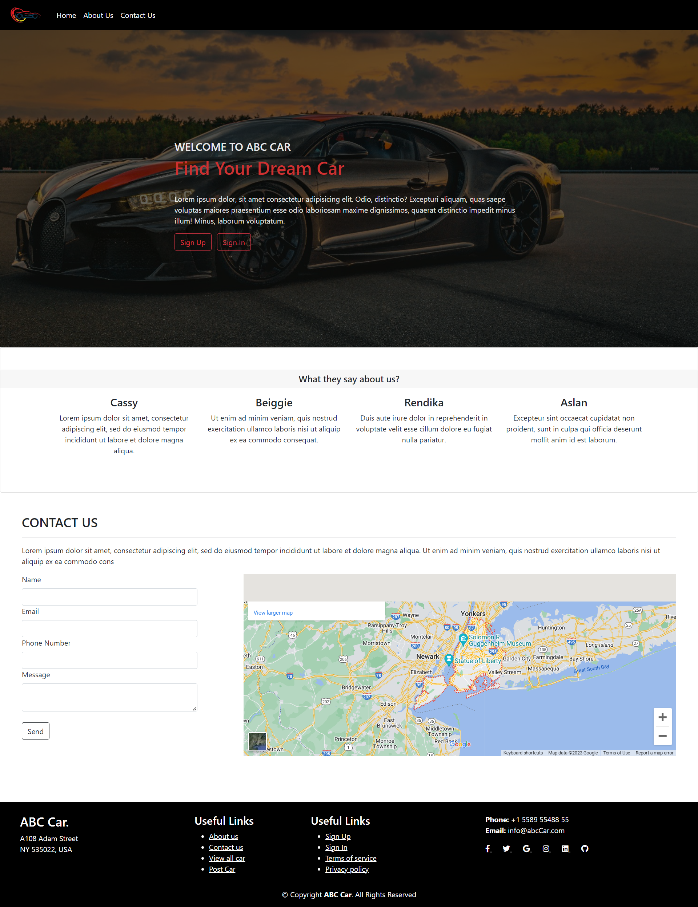
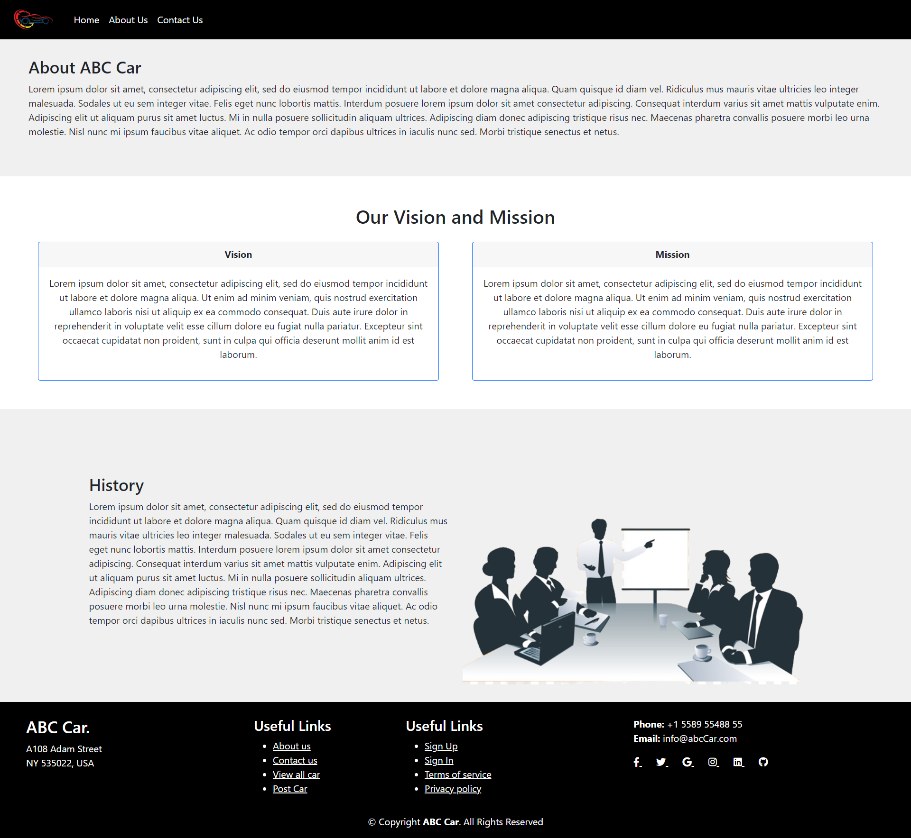
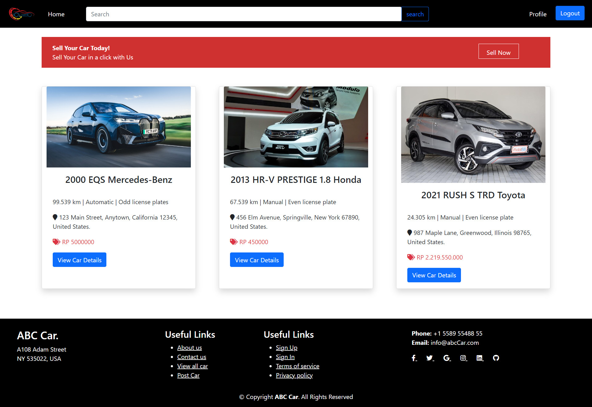
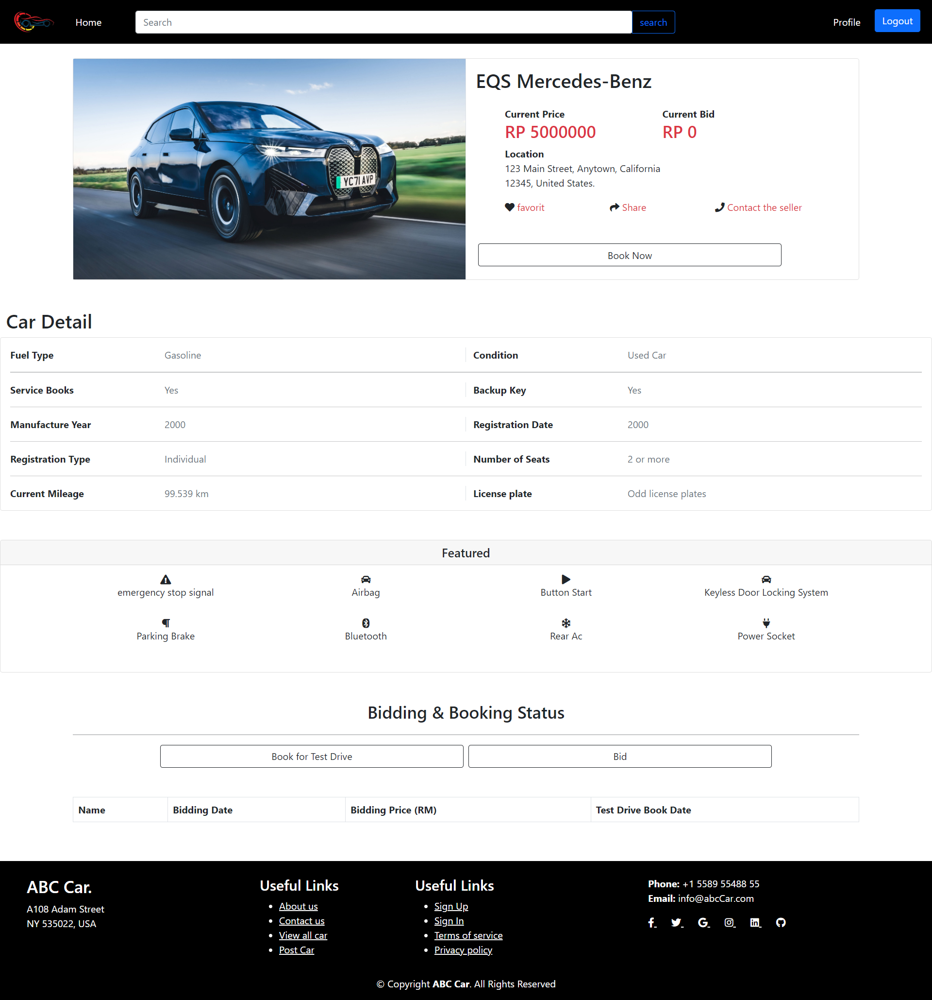
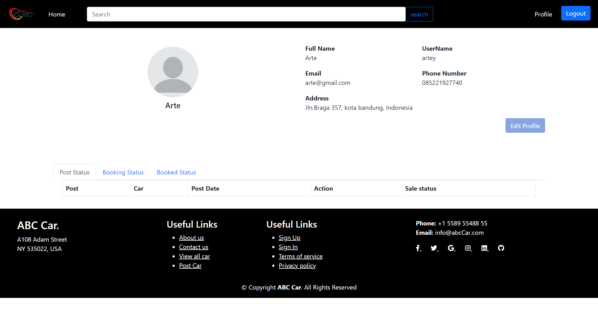

Project information
- Categori: Website
- Tanggal Projek: 5 Mei, 2023
- Teknologi: Java Spring Boot & Bootstrap
- Alat: Spring Tool Suite
- Berhasil menerapkan validasi form
- Berhasil membuat 6 halaman
ABC CARS
ABC Cars adalah portal Penjualan Mobil Bekas. Dimana portal ini memungkinkan pengguna untuk dapat melakukan pendaftaran pada portal tersebut menggunakan Halaman Registrasi. Pengguna akan dapat melihat informasi Mobil setelah mencarinya. Portal ini memungkinkan pengguna untuk masuk, memposting Mobil untuk dijual.
Dalam mengembangkan situs portal ABC Cars, saya memilih alat Spring Tool Suite sebagai editor untuk memastikan pengembangan aplikasi yang lancar dan efisien. Dengan menggunakan Bootstrap sebagai frontend, itu dapat membantu saya dengan mudah mendesain tampilan situs yang menarik, dengan tata letak yang rapi dan sejalan dengan tren desain terbaru. Pada halaman pendaftaran, pengguna dapat dengan mudah mendaftar ke portal ABC Cars dengan mengisi informasi yang diperlukan. Saya menggunakan teknologi Spring Boot untuk mengelola proses pendaftaran dan menyimpan data pengguna dengan aman dalam database. Selain menerapkan Spring Security, saya dapat mengontrol akses ke halaman pribadi dan dasbor admin, sehingga hanya pengguna yang diautentikasi dan berwenang yang dapat mengaksesnya.
Saya juga memastikan bahwa halaman di situs dirancang dengan antarmuka yang intuitif dan ramah pengguna. Pengguna dapat dengan mudah berinteraksi dengan portal ABC Cars, melakukan pencarian mobil bekas, mendaftar, dan melihat informasi mobil dengan lancar dan nyaman. Dalam proyek ini, saya fokus pada pengembangan aplikasi yang efisien dan memanfaatkan teknologi terbaru untuk menciptakan pengalaman pengguna yang unggul. Dengan kombinasi Spring Tool Suite, Spring Boot, dan Bootstrap, saya mulai membuat situs portal ABC Cars yang efisien dan aman.





